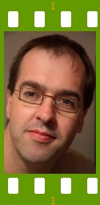

People of openSUSE: Andreas Jaeger

Today we present the interview with Andreas Jaeger, Director Platform/openSUSE and also the very first person who came up with the idea to launch the project ‘People of openSUSE’.
- Nicknames: AJ but that’s already in use on freenode, so I have to use AJaeger.
- Homepage: It’s so outdated that I even removed it from my signature.
- Blog: http://andreasjaeger.blogspot.com
- Favorite season: Each one has its benefits and nice parts – and is tied to a specific place where I want to enjoy it (or where rather not). In general I like spring best.
- Motto: It could be worse – or always look on the bright side…
Please introduce yourself!
I’ve been born in Hückeswagen, a small town east of Cologne in Germany, 38 years ago. I have studied computer science at the University of Kaiserslautern where I also met my wife, Jana. Together we moved to Fürth. I’m employed by Novell’s subsidiary SUSE Linux. As Director openSUSE/platform I am responsible for the openSUSE project and for the basis of the distribution (“platform”) which is shared between our openSUSE and enterprise products.
Tell us about the background to your computer use.
I’ve been using computers since the age of 15. My first computer was a Schneider CPC 464, but I did my first minor programming on a C64. I studied computer science and assembled a new computer together in 1994 – my first PC – and had only Linux running on it. At that point it was a Linux distribution made by a company called S.u.S.E. from Fürth. “Never change a running system” was never applied to my system and I updated quite often – especially the kernel. After working with Solaris at university and missing some functionality on my libc5 Linux system, I looked closer at the GNU C Library and helped to improve it.
When and why did you start using openSUSE/SUSE Linux?
I started to use a first distribution from S.u.S.E. in 1994 – and then updated my system by hand. In 1999 when I started to work for SuSE, I put a new version on my system and have since then been using it.
When did you join the openSUSE community and what made you do that?
I did join the openSUSE community on the day the openSUSE project was founded since I’ve been involved with the project to launch openSUSE – I was responsible for the SUSE Linux distribution as project manager and that one is a major part of openSUSE. I’ve been asked to do it, but did it happily because I thought it’s time to open up our development.
In what way do you participate in the openSUSE project?
On the one side the same as many others: Reporting bugs, fixing bugs, discussing on mailing lists and giving presentations about openSUSE at conferences. On the other side I’m involved – and sometimes drive – discussions inside Novell on different openSUSE project issues.
What especially motivates you to participate in the openSUSE project?
People and technology: There are many technical challenges that we have to solve together especially in the openSUSE Build Service and the distribution. There’s so much that I often can choose what to do. The people on the project are dedicated and working with them is fun!
What do you think was your most important contribution to the openSUSE project/community or what is the contribution that you’re most proud of?
My first major contribution was beeing part of the team that launched the openSUSE project from inside Novell.
When do you usually spend time on the openSUSE project?
During work, in the evenings, sometimes on weekends.
Three words to describe openSUSE? Or make up a proper slogan!
I’m really not a marketing person. “Have a lot of fun!” is an old SUSE slogan that I can identify with.
What do you think is missing or underrated in the distribution or the project?
My main focus is right now to open ourselves more and find more ways so that community members and Novell employees can work and build openSUSE together. There have been some areas, like translation, with a lot of community work but in others we still need some steps to do to enable everybody to fully participate. One example: You can build packages in the openSUSE Build Service but there’s no automatic way yet to have them end up in the distribution.
What do you think the future holds for the openSUSE project?
I hope an excellent Linux distribution that new users and experts find intuitive and easy to customize to their needs, a new way of building software together with the Build Service – and an lively community driving the project. I hope that through openSUSE Linux itself will gain further against proprietary software.
A person asks you why he/she should choose openSUSE instead of other distribution/OS. What would be your arguments to convince him/her to pick up openSUSE?
It’s the distribution I use personally ;-) . I think it’s a nicely integrated, stable distribution that has more than enough software for everybody.
Which members of the openSUSE community have you met in person?
This year, I remember meeting Benji, Christian, Francis and Pascal but there are more over the years. I guess I’ve met all those working for Novell.
How many icons are currently on your desktop?
11 icons – including the default openSUSE 10.3 Beta2 icons.
What is the application you can’t live without? And why?
Emacs – since I’m so used to it and use it for programming, writing texts – like this interview – and for reading and writing my emails.
Which application or feature should be invented as soon as possible?
A tax application that is easy to use and does not need to enter information that just comes from another application or the browser – the yearly taxes are the one task I hate doing by computer.
Which is your preferred text editor? And why?
Emacs – see above.
Which famous person would you want to join the openSUSE community?
Any famous person that has nothing to with Linux at all and changes his/her mind, e.g. Bill Gates. In general I would prefer to have a large and growing community instead of a few famous people.
Which computer related skills would you like to have?
I would rather have some more “soft” skills. Computer-related I would like to have some artistic skills and be able to create great user interfaces.
The Internet crashes for a whole week. How would you feel, what would you do?
Take a vacation walking in the Alps with my wife and our digital cameras and hope that we can still upload the photos afterwards.
Which is your favorite movie scene? / Star Trek or Star Wars?
Let me skip these two, please.
What is your favorite food and drink?
Zwiebelkuchen (some kind of pizza but with onions only) together with federweisser (young wine). In general: I do like Indian and Mexican food and also red wine, especially Australian Shiraz.
Favorite game or console (in your childhood and nowadays)?
I never had a console. Civilization was once a favorite.
Which city would you like to visit?
I’m more into visiting country sides. I would like to spend some more time in those that I visit instead of going there just for a conference and having only one or two evenings to spend on my own exploring the city.
What is your preferred way to spend your vacation?
Visiting the countryside, walking, taking photos – and some good food at the end of the day.
Someone gives you $1.000.000. What would you do with the money?
Buying a house in an area where I could live without any car – and then buying my first car.
If traveling through time was possible, when would we be most likely to meet you?
I would like to sneak in the future and see what will happen with mankind. I guess most likely you would find me 50 to 200 years ago – watching how many new ideas where formed and changed the world and visiting places before these new ideas changed them.
There’s a thunderstorm outside. Do you turn off your computer?
No.
Have your ever missed an appointment because you forgot about it while sitting at your computer?
Yeah, happens far too often. I’m glad about calendars that remind me of my next meeting at work.
Show us a picture of something, you have always wanted to share!
Check my blog for those that I want to share.
You couldn’t live without…
My wife, nature, my camera, internet – at least with none for a longer time.
Which question was the hardest to answer?
This one – and the traveling through time.
What other question would you like to answer? And what would you answer?
Let’s safe that one for another time ;-)